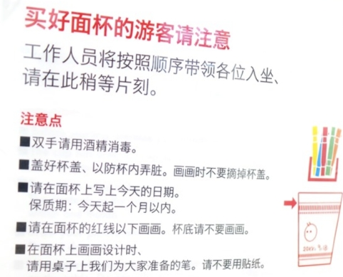
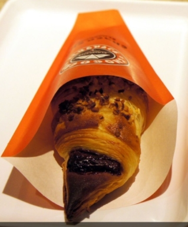
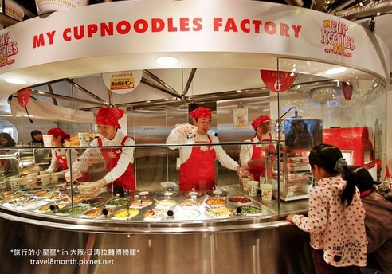
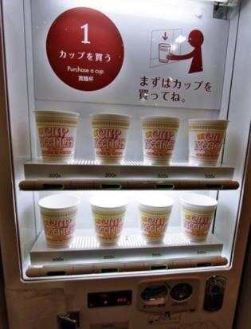
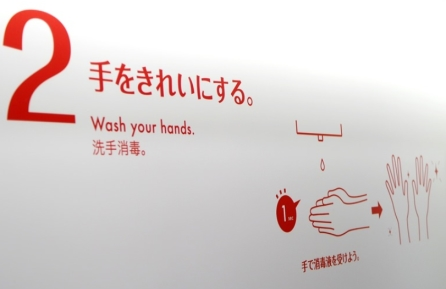

(猿澤池半圈→中谷堂→中川政七→繪圖屋→藏寶箱→商店街→ROKU)
示意圖
中谷堂 拿過電視冠軍比賽
營業時間：10:00~19:00
像麻糬的よもぎ餅 130
綠色是加了艾草
裡面是北海道十勝紅豆餡

300年歷史的 中川政七商店 中川 本店 [官網]
營業時間：10:00~18:30

小鹿迴紋針

獲得日本經濟產業大臣賞的抹布


檸檬紅茶
(左)一般版 7包 1080 (右)心形版 3包 864


繪圖屋 [官網]
營業時間：11:00~19:00
大佛布丁專賣店(奈良車站B1 4號出口右邊也有賣) 360
人氣NO1是原味卡式達 人氣NO2則是大和茶口味

口味超多：原味, 奈良大和茶, 大和地酒
巧克力, 奶酪, 咖啡, 奈良八重櫻, 櫻桃
白鹿布丁則有蒙布朗, 優格, 果醬 420

布丁購買後建議兩小時內用完
若有保冷袋的話則可以撐至5-6小時!
藏寶箱 [官方FB] (確認是否臨時休店)
營業時間：11:00~19:00

菜單


奇異果優格 750


琥珀牛奶冰 750


きなこロール (咖啡口味蛋糕卷)

ROKU奈良小鹿吉祥物 直營店 [官網]
營業時間：11:00~19:00

紙模型 350

東向商店街 [官網]